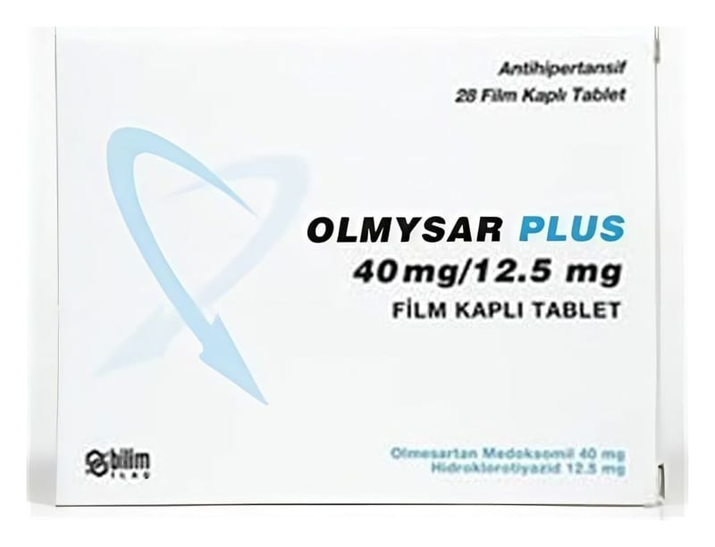

Olmysar Plus 40 mg/12.5 mg Film Kaplı Tablet, 28 Adet

Ne için kullanılır
KT · Bölüm 1Bu ilaç kan basıncının düşürülmesine yardımcı olan iki farklı etkin madde (olmesartan medoksomil ve hidroklorotiyazid) içeren bir ilaçtır. OLMYSAR PLUS 28 film tablet halinde kullanıma sunulmuştur. OLMYSAR PLUS pembemsi sarı renkli, bikonveks, oblong, bir yüzünde 40/12.5 yazılı film tabletler şeklindedir. Bu etkin maddelerden olmesartan medoksomil anjiyotensin-II reseptör antagonistleri isimli bir ilaç grubuna aittir. Bu ilaç kan damarlarını gevşeterek kan basıncını düşürür. Diğer etkin madde olan hidroklorotiyazid ise idrar söktürücü (diüretikler) isimli bir ilaç grubuna aittir. İdrara çıkma sıklığını artırır ve bu yolla kan basıncını düşürür. Bu iki farklı etkin maddenin birlikte verilmesi kan basıncını bu etkin maddelerin her birinin tek başına yaptığından çok daha güçlü bir şekilde düşürür. OLMYSAR PLUS sebebi bilinmeyen yüksek kan basıncı (esansiyel hipertansiyon) tedavisi için doktorunuz tarafından gerekli görüldüğü takdirde kullanılır. Bu ilaç 18 yaşından küçüklerde kesinlikle kullanılmamalıdır.